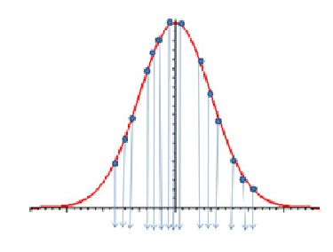
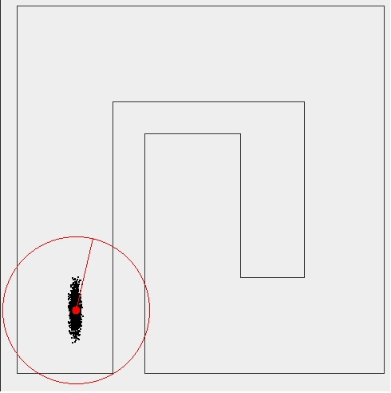
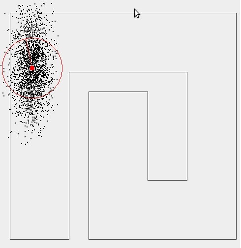

Computer Science & Engineering Mobile RoboticsList Of Experiments
Monte Carlo Localization
Robot motion is inherently noisy. If a robot is given a command to reach a particular goal it will probably fall short or overshoot. This can be due to various reasons like the slipping of the wheels or noise in the motor circuitry. So it makes sense to model this ambiguity in a robot’s motion by using a motion model.
The Motion Model:
The noise in the robot’s motion is modeled by a Gaussian pdf . The robot is more likely to be around the desired location than any other location. The likelihood of finding the robot decreases as we move away from the desired position. Thus, intuitively it makes sense to model the velocity model noise using a Gaussian, with the maxima of the Gaussian centered at the desired location.
The Algorithm
1. Θ(new)=Θ(old)+ωxΔt+N(0,σ(Θ))
The robot first rotates to the desired heading. Some zero-mean Gaussian noise with a standard deviation of σ(Θ) is thrown in.
2. R(new)=R(old)+v x Δt + N(0,σ(r))
Then the robot moves in the direction of the new heading. A noise of N(0,σ(r)) is added to the robot.
3. X=R x cos(Θ(new))
4. Y=R x sin(Θ(new))
In the model we assume the noise due to (r) and the noise due to (Θ) are completely independent of each other. Thus the correlation between (r) and (Θ) is zero and the covariance matrix is diagonal with σ(r) and σ(Θ).
The covariance matrix in x and y can be obtained by transforming the covariance matrix in (r) and (Θ) via a Jacobian transform.
5. Ε(x,y)=J x Ε(r,Θ) x J'
J denotes the Jacobian. J' its transpose.
Ε the covariance matrix
6. The final orientation is sampled from a bivariate normal distribution with N((X,Y),Ε(x,y)).
The Sensor Model:
The sensor model used in the simulation adds to each reading a zero mean Gaussian noise with a variance which can be selected. Thus the result is that the robot receives a value that is centered around its exact reading but deviates as a Gaussian does.
The Particle Filter:
The particle filter has been used for decades to approximate a posterior belief (a pdf) by a set of samples.
The samples are called particles.
Each particle is a set of 2 elements. One is an estimate of the variable of interest (in our case the robot’s pose). The other is the weight of the particle, which is an indicator of its quality. As the particle filter is non-parametric (does not depend on an explicit function) it can be used to model pdf’s of all types.
The larger the number of particles used the more accurate a representation it would be of the pdf. A Particle Filter with infinite particles amounts to the continuous probability function.

The Gaussian in the figure is represented by a set of samples/particles (the arrows). You can see as the number of particles tends to infinity the entire Gaussian is represented.
Monte Carlo Localization:
Monte Carlo Localization applies the particle filter algorithm to solve the problem of the robot’s pose estimation.
Monte Carlo Localization Algorithm:
1. Initialization: We start off with an initial estimate of where the robot is. If the problem is Local then all the particles are initialized to that of the robot. If the problem is Global then the particles are spread all over the map. The weights of the particles initially are equal.
2. We then move the robot so that it is in a position to gain new information.
In this step all the particles sample from a noisy velocity model
3. We gain the new information by sensing.
4. We look at all the particles and assign a weight to each of them based on how well the data they collected fits the data of the robot.
The particles with readings similar to that of the robot are assigned higher weights than the other particles.
5. We resample particles from the higher weights discarding the particles with readings that deviate significantly from that of the robot.
6. We goto step 2
Resampling
The objective of resampling is to eliminate the particles that do not fit the robot’s data as they have a poor estimate of where the robot is.
Resampling can be done in various ways. The method used in the applet is one where the particles are drawn proportional to their weight p(xi)=pi.
Suppose we have 500 particles and we choose to resample them. The particles with a higher weight get sampled from more often than a particle with a lower weight.
The Resampling Algorithm
The resampling for the jth particle is done as follows:
- Generate a random number r in [0,1].
- Find by binary subdivision the smallest i for which ci>=r.
- Set the jth particle as the particle with state corresponding to the smallest i found from above
Here each ci represents the cumulative probability of ith particle i.e.
c0 = 0 ; ci = ci-1 + pi
An Illustration:

Initially the pose of the robot is known .There is no ambiguity as to where the robot is. All the particles are also in the same location as the robot. (In the figure they are under the robot and thus not visible.)

As we move the particles sample from a noisy motion model and start spreading. Thus the pose of the robot becomes more ambiguous.

The more we move without sensing the more the spread, because the initial belief we input into the motion model is itself incorrect.

On sensing, a set of readings is obtained, and resampling is done eliminating the particles that have readings that deviate from those of the robot. These particles are usually the ones that are nowhere near the robot.